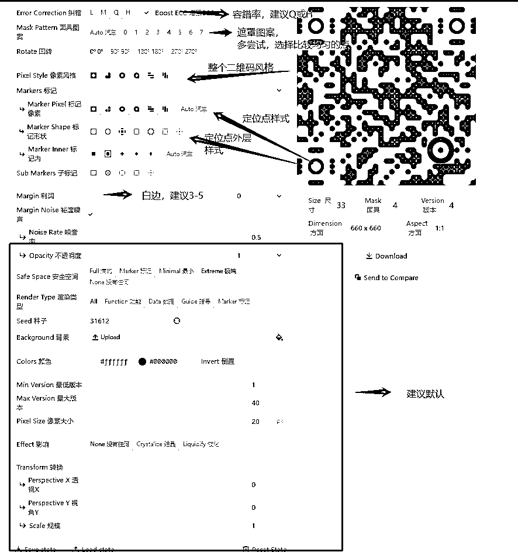

来源：https://i2iygt5qes.feishu.cn/docx/UfoMdnVv7o6E0YxdUcuchWQnnfd
最近半年AI各领域发展一日千里，目前最火热的两个ai绘画平台一个是midjourney，另一个就是stable diffussion。基于这两个软件的各种花式玩法也是层出不穷。半个多月以前就看到过生财两位圈友关于艺术二维码制作的帖子。一边惊叹于现在ai绘画发展的迅速，一边又苦于自己电脑配置跟不上，电脑小白，感觉云端部署又挺麻烦。也没stable diffussion的基础，所以一直停留在当观众的阶段。
半个月前看到另一位圈友发了一个帖子https://t.zsxq.com/10vQhYFkY 马上就来了兴趣，在小程序上充值了一周会员，想着体验一下。生成了好几张比较精美的二维码图片。正好晚上刷抖音就刷到了相关的教制作二维码的视频。顺手就把生成的图片在下面发了一下，就没管了去睡觉。结果第二天一大早起床就看到微信有几十个添加信息，吓我一跳😂
虽然大部分人都是觉得新奇，想扫码来试试看。但也有很大一批人想找我定制。我也没考察过市场的定价。就随便定了29.9一张（小程序里面出图成本1元一张）累积一天下来就接近60多人通过扫码加我，付费7人。接下来几天累积有100多人加我，利润400左右，虽然不多，但这也是从0到1的尝试，证明市场需求还是比较大的。由于本地连续停电了两天，就去泡了两天网吧。用网吧的4080跟着圈友的分享实操。中间也经历过很多问题，出现各种崩脸，断手断脚的问题。前后尝试了几百张图。不断修改各种参数。终于出了第一张能扫的图，当时把我激动坏了。
帮朋友生成二维码，请勿添加
有了正反馈就继续尝试。也通过小红书、B站等平台学习了不少二维码相关的知识。因为已经有两位圈友分享过相关内容了，基础知识我就不多说了。感兴趣的圈友可以看看。
1、最近很火的艺术二维码，是怎么创作的？
2、【技术向】一文讲透如何用SD制作出来高质量艺术二维码
站在巨人的肩膀上学习，感谢圈友的无私分享。本文主要做一个补充和拓展，接下来，废话不多说，直接上干货。
Antfu玩法非常多，可以在网址栏输入文字，生成文字型二维码。然后再stable diffussion生成二维码，相对个人二维码来说，平台审核没那么严。小红书也看到很多人有定文字艺术二维码的需求，可以花式表白制造惊喜。也可以在下面上传背景图，后面的玩法我会详细介绍。这里只需要注意两点：
1、二维码分布尽量均匀一点，到时候出图会更美观
2、一定要用手机先扫描试试看，易识别性是艺术二维码最重要的一点。

此类二维码算是现在市面上最常见的二维码，只要按照参数去调节就行。多尝试，主要靠抽卡，不过也可以搭配各种各样的Lora来设定图片风格，会有很多意想不到的效果。比如上面的王者荣耀角色风格，如果提示词里有人，最好加上full body，让人全身入画，这样人脸会变小，不容易被斑点覆盖。人脸变小之后容易崩坏，修脸神器ADetailer可以解决崩坏的问题。文章最后我会放上文件链接，大家可以自行安装。
正面提示词：masterpiece,best quality,1girl,blonde hair,blue eyes,beautiful eyes,detail,flower meadow,cumulonimbus clouds,lighting,detailed sky,garden,full body,
反面提示词：(((nsfw))),EasyNegative,badhandv4,ng_deepnegative_v1_75t,(worst quality:2), (low quality:2), (normal quality:2), lowres, ((monochrome)), ((grayscale)), bad anatomy,DeepNegative, skin spots, acnes, skin blemishes,(fat:1.2),facing away, looking away,tilted head, lowres,bad anatomy,bad hands, missing fingers,extra digit, fewer digits,bad feet,poorly drawn hands,poorly drawn face,mutation,deformed,extra fingers,extra limbs,extra arms,extra legs,malformed limbs,fused fingers,too many fingers,long neck,cross-eyed,mutated hands,polar lowres,bad body,bad proportions,gross proportions,missing arms,missing legs,extra digit, extra arms, extra leg, extra foot,teethcroppe,signature, watermark, username,blurry,cropped,jpeg artifacts,text,error,Lower body exposure
上面只是我出图的起手式，提示词大家可以多多利用翻译软件，修改细节达到自己想要的效果。也可以利用提示词网页辅助。文章的最后我也放上了我出图的一些关键词，大家可以照着出图试试。当然不同二维码参数需要多调试！对于想要加强的效果可以增加相应提示词权重
1、公式：圆括号() + 冒号: + 数字
意思：增强 / 减弱n倍
2、公式：圆括号()
意思：增强 1.1倍（可以叠加多次）
3、公式：大括号{ }
意思：增强 1.05倍（可以叠加多次）
4、公式：方括号 [ ]
意思：增强 0.9倍（可以叠加多次）
以下是我出图的主要参数
最好有2个及以上的controlnet窗口。我平时主要用到两个，如果需要更精细的调节，熟悉以后可以不断添加，也可以搭配更多的灵活玩法，比如添加艺术文字之类，当然也会增加生成的时间。这个二维码比较粗糙，将就看看。有机会可以深入研究，提高二维码美观。
（1）第一个controlnet的设置。
上传图片之后，勾选启用enable和pixel perfect完美像素。
preprocessor预处理器可以不选，模型选qrcode monster
weight一般设置1.5左右，参数可以不断多调整。没有固定值
start step和end step写0.1-0.85，给ai一点空间创造更好看的图。
（2）第二个controlnet的设置
同样上传图片，启用+pixel pefect
预处理器不选。模型选brightness，brightness的作用主要是调节图片与二维码明暗关系，让二维码更容易识别。所以wight设置在0.2-0.5之间就可以了。我一般0.25左右，start step和end step设置0.65-0.85即可。
此种方法在上面的玩法上增加了一个步骤，目的就是让二维码在图片局部出图。比如裙子或者其他部位，大片留白可以让SD有更多的发挥空间，出的图可以直接当壁纸用，美观性与实用性兼得！成品图可以在壁纸套样机里面过一遍，沉浸式体验二维码。https://mjcn.club/ （此类图在小红书很受欢迎！）
操作方法：把Antfu里面生成的图在常用的p图软件里面生成一张新的图（这里以稿定设计为例），可以预先设想一下把二维码放在哪里，比如裙子部位。就放在图片偏下，这里记得先用手机扫扫看。害怕图片太小影响二维码的可识别性。然后将生成的图按第一个方法出图就行。
还记得上文说的Antfu上传背景吗，这里就用上了，这样的二维码隐藏性和观赏性都不错。
首先可以制作一张圆形的背景图，把它上传到Antfu，这里需要注意一点。要不断调节Margin值，确保二维码完全被圆形包在里面。但数值也不要太大，不然会有很多噪点。适中就好！调整好记得也要用手机扫扫，看看是不是容易扫出来 。
二维码生成之后还是老规矩，上传SD出图。
有的时候抽卡抽到一张自己觉得非常好看的图片但扫码成功率不高应该怎么办呢？这里还有一个关于Antfu的隐藏功能，首先我们进入到网址/插件页面，选择Compare，然后将生成的图片和二维码原图分别导入
它会对比两张图，找出过错的像素点，这里我们可以看到不匹配的点并检查节点。图像无法扫描，因为我们有很多不匹配之处，也就是说图像的某些部分可能没有足够的对比度。将鼠标悬停在“Highlight Mistmatch”按钮上，可以看到突出显示的不匹配点：点击右侧的 “Preview Correction”能够预览修正作用，点击“Download”能够下载修正后的图，下边还有一些修正参数，可以通过参数的控制来微调图片，这样就可以在基本不改变图片的前提下，提高图片被扫出的成功率
艺术二维码天生自带引流，各大平台打压还是比较严格的。公域发图尽量还是要把关键点进行遮挡防止平台限流。除了线上引流，其实线下很多企业对于二维码定制也有比较大的需求。二维码+行业的定制可以多探索一下。
AI绘画发展速度非常快，玩法也更新迭代的特别快。未来相信会有隐藏的更好的二维码玩法出来，拭目以待下。如果有最新的玩法，我也会在这个文档更新。
本文可能需要的文件链接：https://pan.baidu.com/s/1ccWsMn16E8kcBYBzC5hpJQ?pwd=56t7
提取码：56t7
ADetailer安装教程
二维码提示词汇总